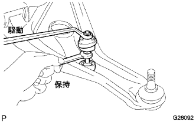

Power steering link Assembly (4WD) removed |
| 1. Front tire directly advanced status inspection |
| 2. Remove the steering column hole cover plate |
 |
Remove the two clips and remove the steering column hole cover plate from the vehicle.
| 3. Steering sliding York SUB-ASSY disconnection |
 |
Attach the seat belt so that the steering wheel does not rotate.
 |
Loosen the bolts on the column side (A) of the sliding yoke.
Remove the bolt on the gear side (B) of the sluding yoke.
Mark the sliding yoke and the interimide shaft, and separate the sliding yoke.
| 4. Steering column hole cover SUB-ASSY No.1 Cut off |
 |
Remove the clip A and separate the hole cover No.1 from the body.
| 5. Power steering fluid |
| 6. Remove the front tire |
| 7. Tie rod end sub-assy LH disconnection |
 |
Remove the cotter pin and castle nut.
Use SST to separate the tie rod end LH from the steering knuckle.
| 8. Tie rod end sub-assy RH cut off |
| 9. The engine Anda cover LH is removed |
Remove two bolts and two screws and remove the engine and cover LH.
| 10. The engine Anda cover RH is removed |
Remove two bolts and two screws.
Remove the nut and remove the engine and cover RH.
| 11. Proposhaft with Center Bearing ASSY |
 |
Attach the mark to the point in the figure, remove four bolts, washer and nuts, and separate the propeller shaft ASSY RR from the default flange.
 |
 |
Remove the four bolts and remove the Propellawiz Center Bearing Shaft ASSY.
 |
After removing the Propellawiz Center Bearing Shaft ASSY, the SST is inserted into the extension housing to prevent the leakage of the transfile.
| 12. Oxygen sensor is removed |
Cut the clamp and connector.
 |
Use the SST to remove the oxyde ensenser.
| 13. Exhaust manifold Heat Insulator No.1 |
 |
Remove the four bolts and remove the exhaust manifold heat insulator.
| 14. Front suspension cross member SUB-ASSY disconnected |
 |
Remove the two bolts and disconnect the power steering gear ASSY W/Vane pump ASSY.
 |
Remove the castle nut and use the SST to separate the ball joint of the rower arm from the steering knuckle.
 |
Remove the four bolts and remove the front suspension Menbarin Housing RH and LH.
 |
Remove two bolts and nuts and separate the engine mounting insulator RR.
 |
Support the suspension cross member in mission jacks.
Take the four bolts in the figure in the figure, and secure the gap between the exhaust pipe ASSY FR with the mission jack.
| 15. Exhaust pipe ASSY FR removes |
Remove the two bolts and remove the exhaust pipe ASSY FR.
| 16. Bane pump stay RR removed |
 |
Cut the two clamps of the oil pressure sensor harness from the stayia and the oil reservoir assessy and separate the connector.
 |
Loosen bolts A and bolt B, shift the vane pump ASSY to the engine side, and separate the V belt.
Temporarily tighten bolts A and bolt B, and fix the vane pump asser.
 |
Remove the bolt and remove the stayia and heat insulator from the vane pump ASSY.
| 17. Pressive tube assigned separation |
 |
Use the Union Nut Wrenten 17 to separate the pressure feed tube ASSY.
 |
Put the clip, mark the match, and separate the hose No.1.
| 18. Remove the front stabilizer bolt |
Fix the front stabilizer bolt with a spanner (10mm) and remove the two nuts.
Remove four front stabilizer barceds reteners No. 1, 4 front stabilizer cushions, front stabilizer bar cushion retainer No.2 and front stabilizer bolt.
|  |
The other side is removed in the same procedure.
| 19. Stabilizer bar FR removes |
Remove the four bolts and remove the front stabilizer bracket No.1 LH and RH.
Remove the left and right front stabilizer barbush No.1 from the stabilizer bar.
Remove the front stabilizer bar from the right side of the vehicle.
| 20. Power steering link asset |
Remove the two bolts and separate the steering link associate from the cross member.
 |
Remove the four bolts and remove the reinforce LH and RH.
Support cross members with mission jacks.
 |
Remove the four bolts, lower the cross member a little, and remove the steering link associated with the pressure feed tube ASSY.